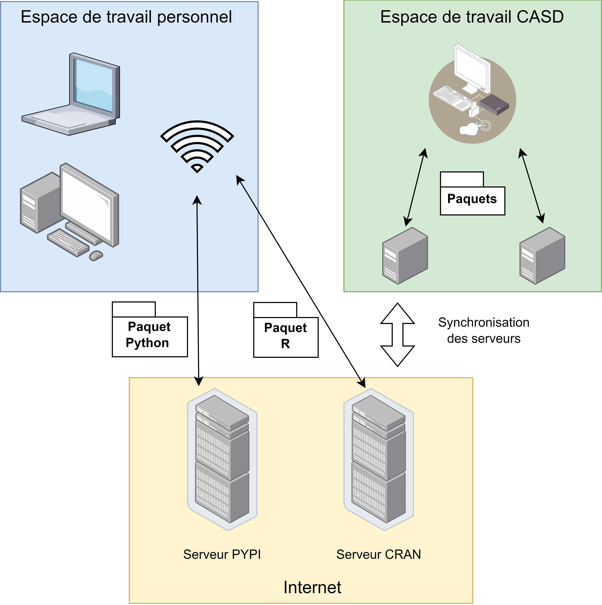

Python at CASD
Datascience team
Goals
- Why use python?
- Key concepts in python
- How to use Python at CASD?
- Basic python syntax
- Python for data science
Why use Python?
Python is a General Purpose Language(GPL) born February 1991. In the 2010s Python became popular, driven by the growing popularity of data science.
R is a Domain-Specific language (DSL) for data analysis and visualization.
Python Key Advantages:
- Simple and readable syntax
- Cross-Platform and Versatile
- Interoperability with other languages
- Vast and mature ecosystem
- Supports Multiple Paradigms(e.g. procedural, object-oriented, functional)
Some disadvantages
- Interpreted Language: slower than complied languages(e.g. C, Go)
- Dynamically Typed: Python interpreter infers variable types automatically ⏩ Code example
- Not strongly Typed: unlike Java ⏩ Code example
- Global Interpreter Lock (GIL): Threads cannot run in parallel on multiple cores
Variables are dynamically typed in python
x = 5
print(f"type of x is: {type(x)}")
# type of x is int
x = "hello"
print(f"type of x is: {type(x)}")
# type of x is str
Python is not strongly typed
# python function checks operator types
1 + "2" # ❌ TypeError: unsupported operand types (int + str)
# but some type is allowed
1 + True # ✅ 2 (True → 1)
3 * "a" # ✅ "aaa"
Key Components in a Python Project
- Python Interpreter: The core runtime that executes Python code
- Virtual Environment: An isolated environment for avoiding version conflicts between packages.
- Package Manager: Tools handle installation, upgrades, and removal of third-party libraries
- Integrated Development Environment (IDE): Environments provide code editing, linting, debugging.
- Project Structure & Configuration Files: Files like `pyproject.toml` list project author, dependencies, Licence, etc.
A Python Interpreter is :
- Bytecode Compiler: Translates .py source files into .pyc bytecode
- Stack-based Virtual Machine: Executes .pyc bytecode instructions to allow python code to have the same output across OS
- Built-in Types and Functions: Implementations of Primitive types(e.g. int, str, etc.) and functions(e.g. print, len, etc.)
- Runtime: Interfaces with the host OS (memory, file, socket, etc.)
- Garbage Collector: Cyclic garbage cleaning to free memory
- Standard Library: Module like `os`, `math`, `statistics`
Python Virtual Environment is an isolated workspace that contains its own Python interpreter and dependencies.
- Isolation: Keep dependencies for each project separate to avoid conflicts.
- Reproducibility: Freeze (pip freeze) exact versions for repeatable builds.
- Clean Environment: Avoid polluting global/system Python with project-specific packages.
- Multiple Python Versions: Different projects can use different Python versions (e.g., 3.9 vs 3.12).

Package management in Python refers to the system that handles:
- Installing, upgrading, and removing third-party libraries (a.k.a. packages)
- Managing dependencies between packages
- Ensuring version compatibility
- Popular tools: pip, conda, poetry
IDE for python:
An IDE is a software application that provides a complete set of tools for writing, debugging, testing, and deploying code faster in a single interface.
- PyCharm: Excellent code analysis, debugger, etc. Heavy on memory.
- Visual Studio Code (VS Code): Lightweight, needs to install plugins for python development
- JupyterLab: Notebook-Centric, best for data analysis, machine learning.
- Spyder: MATLAB-like interface, best for scientific computing.
Python project structure and configuration files
Python in CASD
- Python Interpreter: conda
- Virtual Environment: conda
- Package Manager: pip
- Integrated Development Environment (IDE): vs-code
- Project Structure & Configuration Files: CASD best practices
CASD VS Outside world:
SOP for creating python project in CASD
Python packages :
Standard packages are native in python Interpreter!
pip install sysThis command will fail, because sys is a standard package,it's already in the python environment. We can use the standard package directly.
import sys3rd party packages :
Users need to activate the CASD PyPi server, before running the below command
pip install pandasCASD PyPi server does not have all the packages in the official PyPi repo. You can check package availabilities with the below commands :
pip install package-name --dry-runpip index versions package-nameContact service@casd.eu, if the required package is not available
VScode in CASD
By default, vscode does not have the required plugins for python development.
CASD provides a list of vscode plugins for python development:
- Plugin location: S:\VsCode\
- Plugin for python: S:\VsCode\Python\*
- Plugin for markdown: S:\VsCode\Markdown\*
- Plugin for Git: S:\VsCode\Git\*
Basic python syntax
- Indentation (Important!)
- Variables and Data Types
- Conditions
- Loops
- Functions
- Common data structure
- Exception handling
- Imports
Go to the TP2: basic_python_syntax
Python for data science
Python provides thousands of packages for data science. Below are some most popular packages
- Data Wrangling: pyspark, pandas, pyarrow, dask, polars
- Geospatial Data Science : sedona, geopandas, shapely, pyproj, rasterio, kepler.gl
- Statistics and Math: ydata-profiling, statsmodels, sympy, numpy, scikit-misc
- Machine Learning: scikit-learn, xgboost, lightgbm, catboost
- Deep Learning: tensorflow, torch, keras, fastai
- Time Series & Forecasting: prophet, tsfresh, darts, sktime
- Natural Language Processing (NLP) : nltk, spacy, transformers, gensim, textblob,